Plan efter era mål
Oavsett vilka behov och mål du har så inleder vi med att gemensamt lägga upp en plan utifrån dina önskemål.
Välkommen till Lyckosvansen
Hej och välkommen till Lyckosvansen. Lyckosvansen ägnar sig helhjärtat åt hundar och hundsporten Nosework, det vill säga det bästa som finns! Från och med våren 2026 utökar vi även med hundsporten Hoopers.
Lyckosvansen erbjuder privatlektioner och kurser. Nosework är ett roligt och enkelt sätt att aktivera sin hund, alla hundar kan delta! Nosework är även en superrolig hundsport som man kan tävla i om man är intresserad av det. Det samma gäller Hoopers.
Lyckosvansen drivs av Laila som är certifierad SNWK instruktör och av SNWK auktoriserad doftprovsdomare. Laila är även av SNWK utbildad tävlingsledare. Laila är snart även certifierad SHOK instruktör i Hoopers. Laila tävlar aktivt med alla sina fyra hundar i Nosework. Vi finns i Västerås.
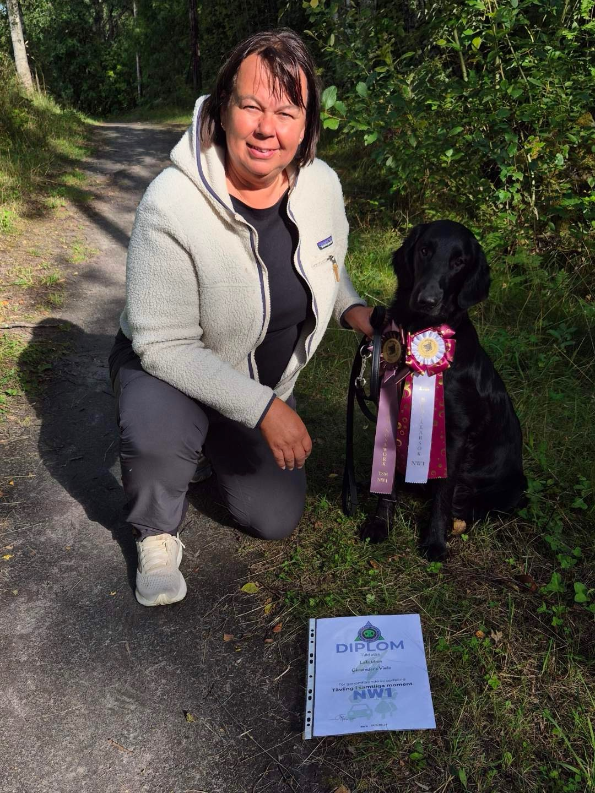
Hundkurser privatlektioner
Kommande kurser - hösten 2026
Fler kurser och datum för höstens kurser publiceras inom kort. Kontakta mig gärna vid intresse!
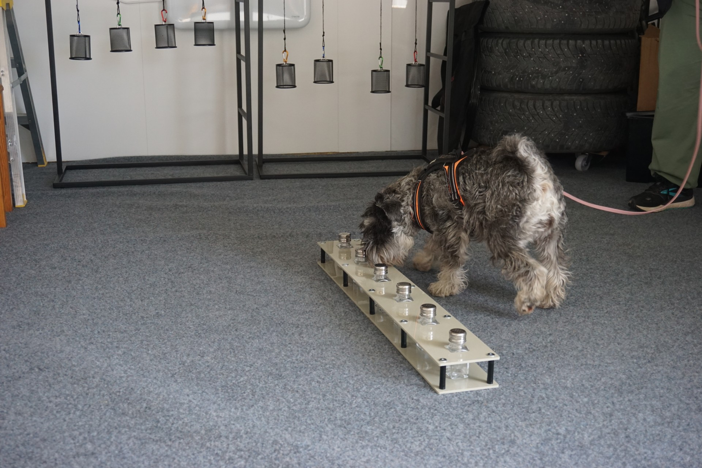
Oavsett vilka behov och mål du har så inleder vi med att gemensamt lägga upp en plan utifrån dina önskemål.
All träning sker med belöningsbaserade, moderna träningsmetoder.
Både Nosework och Hoopers passar alla hundar, givetvis anpassas nivån utifrån era förutsättningar.
Laila erbjuder privatlektioner vardagar, såväl dagtid som kvällstid, i Västerås.
Priserna gäller träning hemma hos mig i Rytterne eller på överenskommen plats i Västerås. I annat fall tillkommer eventuellt kostnader för resor med bil.
á 1 timme (1-2 ekipage)
á 1 timme (1-2 ekipage)
Om fler ekipage kommer vi överens om en kostnad.
Gemensam plan utifrån dina önskemål.
Vardagar, såväl dagtid som kvällstid.
Västerås, hemma hos mig i Rytterne eller på överenskommen plats.
Eventuella kostnader för resor med bil kan tillkomma.
Bokning
För anmälan och bokning hänvisar vi till vår anmälningssida där du även hittar viktig information om villkor inför kursstart.
Följande kurser har genomförts tidigare och är för närvarande avslutade (ej bokningsbara):
Kursledarna Anna och Laila är tillsammans certifierade/diplomerade hundinstruktörer alla fyra hundsporter med egen erfarenhet av tävling.
En kurs som ger förbättrat samarbete, psykisk och fysisk stimulans, glädje, ökat självförtroende, stresshantering och mycket mer. Hunden får även på olika sätt utlopp för den så viktiga nosaktiveringen. All träning sker med belöningsbaserade, moderna träningsmetoder. Passar alla hundar oavsett nivå och ålder. Vi anpassar efter er nivå.
Under denna kurs börjar vi träna på klass 2 nivå i alla i fyra moment (behållare, inomhus, utomhus och fordon). Utöver att hundarna introduceras för en ny doft i klass 2 (lagerblad) så tillkommer det en del svårigheter/klurigheter jämfört med hur det är i klass 1. Vi kommer exempelvis att börja träna på flera gömmor, höga gömmor, djupa eller otillgängliga gömmor med mera. Vi kommer även att öva på klass 2 behållare. Varje träningspass börjar med lite teori innan vi övar praktiskt med hundarna.
Förkunskap: För att du ska tillgodogöra dig kursen bör du ha grunderna i nosework och helst ha tävlat lite i klass 1. Hunden bör ha påbörjat inlärning av lagerblad, godkänt doftprov är inget krav, men både eukalyptus och lagerblad kommer att användas som måldoft under kursens gång.
Instruktör: Laila Gren är SNWK certifierad instruktör och doftprovsdomare. Laila tävlar aktivt i nosework med sina fyra hundar. Med dvärgschnauzern Ruth tävlar hon i klass 3 och med den yngsta hunden Vera som är en flatcoated retriever tävlar hon klass 2. Mer information finns på www.lyckosvansen.se
Var: Plats är någonstans i eller strax utanför Västerås. Bil kommer att krävas, även för att din hund ska ha någonstans att vila under teoripass samt mellan söken. Plats meddelas i samband med att faktura skickas ut.
Om din hund börjar löpa under kursens gång, meddela mig snarast så tar vi tillsammans fram en bra lösning.
Telefonnummer: 070-215 41 80 (Nås säkrast via SMS eller e-post)
Mejladress: laila@lyckosvansen.se
Adress: Mällringe 7, Västerås

Jag som driver Lyckosvansen heter Laila. Jag har haft hund och varit aktiv i olika hundaktiviteter i hela mitt liv i varierande grad. Jag har provat på lydnad, agility, rallylydnad, spår mm men aldrig tävlat förrän jag stötte på den fantastiska hundsporten nosework. Jag har haft lite olika hundraser genom åren: welch corgi pembroke, flatcoated retriever, dalmatiner och dvärgschnauzer.
I familjen idag ingår dvärgschnauzrarna Poppy (2019), hennes dotter Ticki (2022) samt Ruth (2020). Sommaren 2024 utökades familjen med en flatcoated retriever, Vera.
När jag inte ägnar mig åt hundar så arbetar jag som miljö/geoteknik konsult i makens företag Gren Consulting AB. Mer information finns här: www.gconsult.se
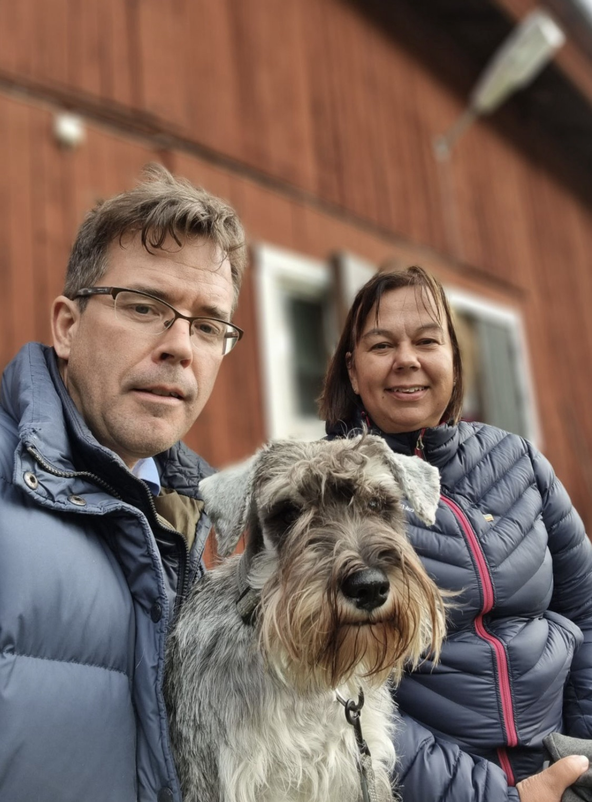
Innan Corona lamslog oss alla hann jag börja träna nosework med dvärgschnauzrarna Poppy och Ruth. Jag fastnade verkligen för sporten då jag såg hur kul hundarna (och jag!) tyckte att det var. Vi gjorde de första doftproven när pandemin lättat greppet om oss i maj 2022 och därefter började vi tävla lite smått. Nu var jag fast! Jag som inte ens är en tävlingsmänniska verkligen älskar att träna och tävla i denna sport. Främst då jag ser hundarnas glädje, är de glada är jag glad.
Hösten 2023 gick jag Svenska Nose Work Klubben's (SNWK) instruktörsutbildning i Borlänge med certifiering i november (2023). Därefter vidareutbildade jag mig som instruktör i klass 2 och klass 3 (2024). År 2025 vidareutbildade jag mig inom proprioception (kroppskontroll och balans) och nosework (Hundiahöjden, 2025). Och i år (2026) kommer jag att vidareutbilda mig i klass 3 och elit.
Jag tränar och tävlar aktivt med alla mina fyra hundar i sporten. Med dvärgschnauzern Ruth tävlar jag i TSM och TEM behållare samt TEM fordon i klass 3. Med Poppy och Ticki i TSM klass 2. Med den yngsta hunden, det vill säga "flatten" Vera (1,5 år), har jag precis kommit upp i klass 2 (TSM) och vi har hunnit med att knipa ett diplom tillsammans i den klassen.
Nosework är ett roligt och enkelt sätt att aktivera sin hund, alla hundar kan delta! Nosework kräver inte någon särskilt avancerad eller kostsam utrustning.
I nosework får hunden briljera och använda sitt främsta sinne, sitt luktsinne.
Nosework går ut på att hunden tillsammans med sin förare söker efter specifika doftgömmor i olika miljöer. Hunden är stjärnan och föraren måste lita på hundens luktsinne och signaler för att lista ut var doftgömman finns.
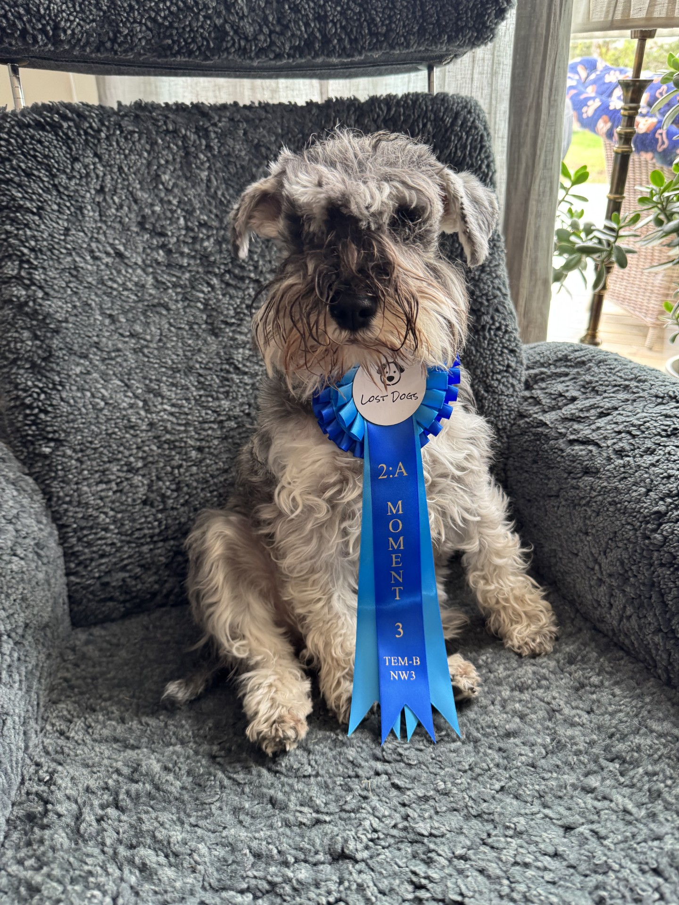
Enkelt förklarat går ni tillsammans på skattjakt, hunden söker efter skatten (doftgömman) med luktsinnet, när hunden hittar skatten visar den det på något vis som föraren kan "läsa av" (kräver så klart träning) och hunden får sin belöning. Hunden får genom sökarbetet mental och fysisk aktivering och aktiviteten stärker samarbetet mellan er.
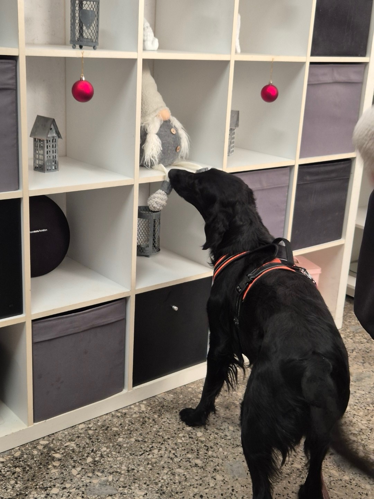
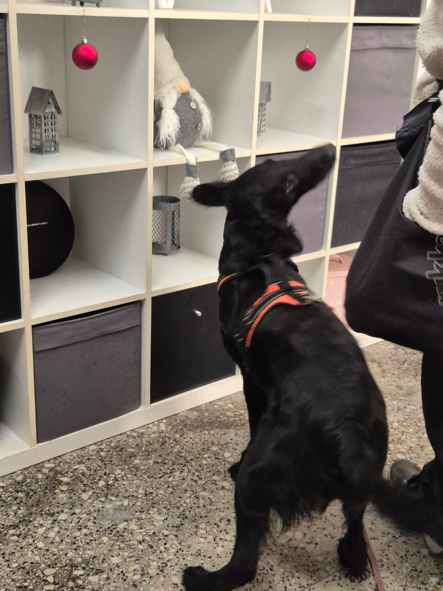
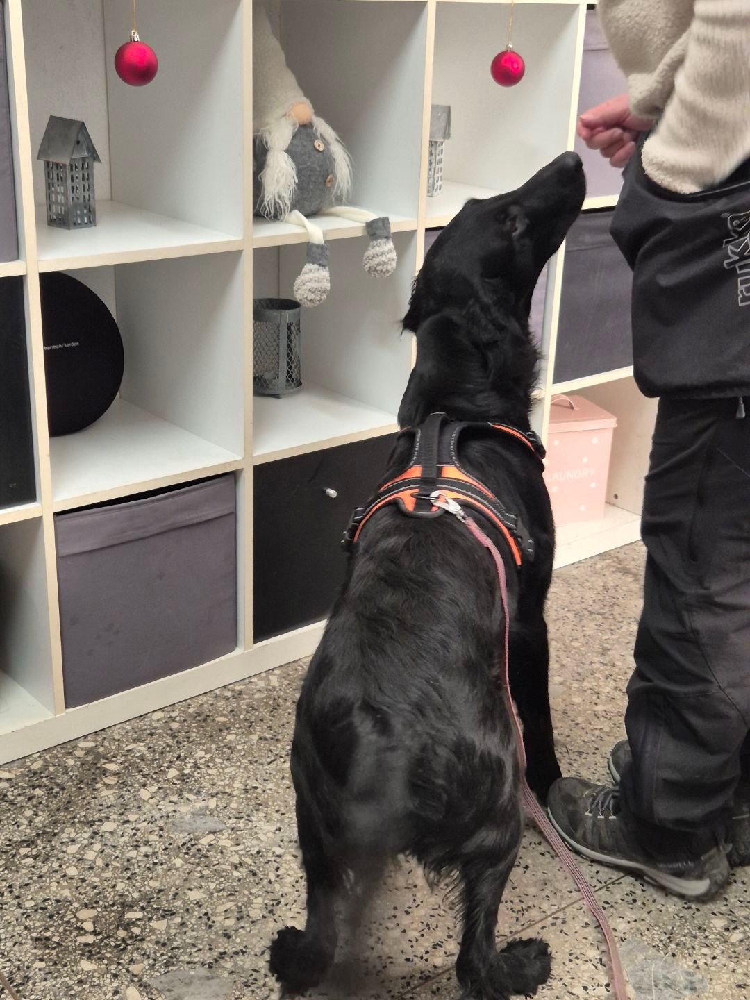
Nosework är också en superrolig hundsport (den roligaste, om du frågar mig) som man kan tävla i om man är intresserad av det. I Sverige söker hundar efter specifika hydrolat (eukalyptus, lagerblad och lavendel) beroende på vilken klass man tävlar i. Det finns fyra olika tävlingsklasser: NW1, NW2, NW3 och Elit.
Du kan alltså syssla med nosarbete både för att tävla tillsammans med din hund, eller som en rolig och prestigelös aktivitet. Oavsett vilket kan Lyckosvansen hjälpa dig.
I nosework tävlar man i fyra typer av sökmoment:
Hundsporten är inspirerad av de utmaningar som professionella sökhundekipage möter i sitt dagliga arbete inom till exempel polisen och tullen
Alla nosework tävlingar innehåller fyra sökmoment. En nosework tävling kan antingen bestå av ett sök av varje sort enligt ovan (behållarsök, inomhussök, utomhussök och fordonssök) eller fyra sök av samma sort (exempelvis fyra olika fordonssök).

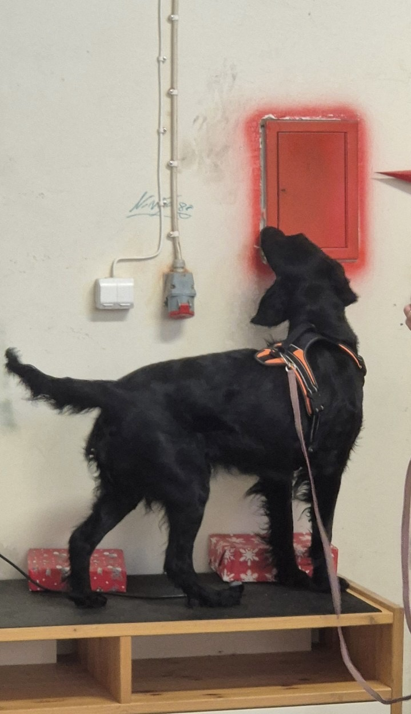
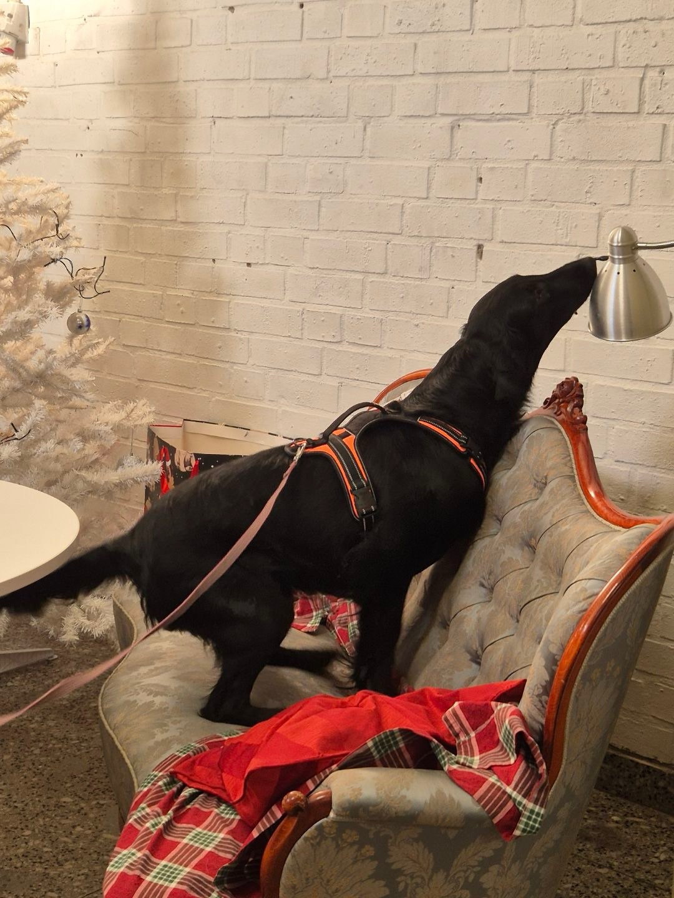
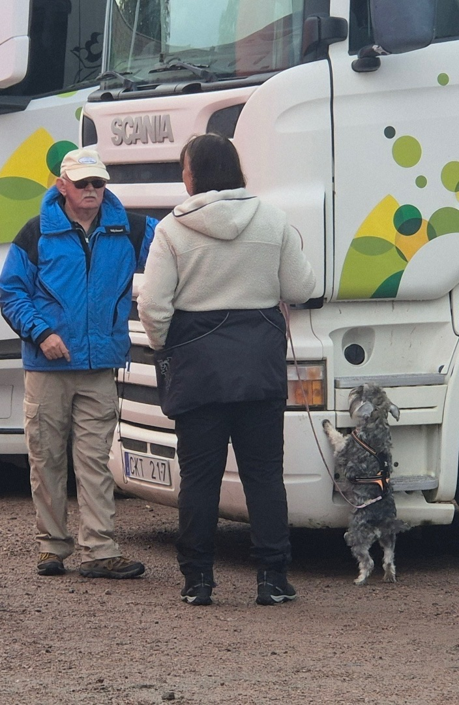
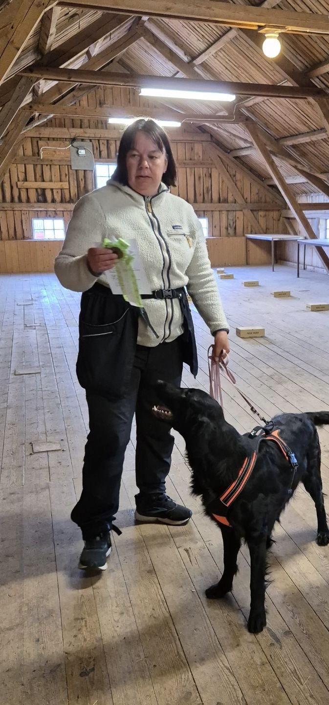
Hundsporten är inspirerad av de utmaningar som professionella sökhundekipage möter i sitt dagliga arbete inom till exempel polisen och tullen.
Sporten grundades i USA av tre professionella specialsökstränare Ron Gaunt, Amy Herot och Jill-Marie O'Brien. Deras tanke var från början att hjälpa hundar på hundstallar till en mer dräglig tillvaro med aktivering för mental stimulans. Målsättningen var också att ge sällskapshundar och deras ägare ett roligt och lättillgängligt sätt att aktivera sig tillsammans genom sökarbete.
Mer information om nosework går att finna på Svenska Nose Work klubbens webbsida: www.snwk.se
Om du vill börja lite med nosarbete på egen hand utan handledning av en utbildad instruktör så rekommenderar jag dig att börja med godissök. Låt din hund söka efter godis som du gömt på exempelvis köks- eller vardagsrumsgolvet. Låt hunden hitta godisbitarna på egen hand. När du märker att din hund börjar bli bra på att hitta godisbitar på golvet kan du börja göra det lite svårare för hunden, exempelvis genom att lägga godiset på olika höjder på möbler eller liknande. Du kan också gömma godis utomhus på stenar, trädstammar, utemöbler osv. Godissök i olika miljöer kan hjälpa till att stärka din hunds självförtroende och er relation.
Nose Work utmanar både kropp och sinne och låter hundens naturliga instinkter få fullt utlopp. Resultatet är en harmonisk, tillfredsställd och lycklig hund.
Genom samarbetet i söken bygger du och din hund en djupare tillit och kommunikation. Träningen stärker bandet mellan er och skapar glädje i vardagen.
Oavsett ras, ålder eller tidigare erfarenhet kan alla hundar njuta av Nose Work. Det är en tillgänglig och kravlös aktivitet där varje ekipage utvecklas i sin egen takt.
Inom Nose Work finns det tre olika dofter: eukalyptus, lagerblad och lavendel.
Det finns fyra olika klasser: NW 1, NW 2, NW3 samt NW Elit.
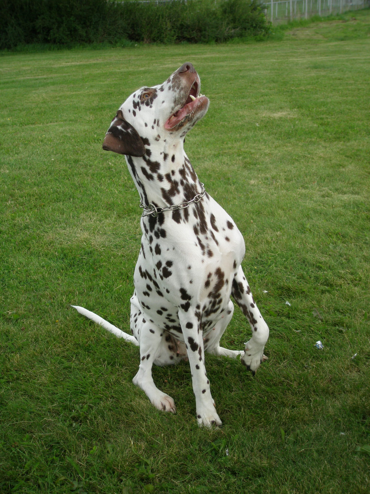
Nej. Du kan ha minst lika kul med Nose Work utan tävlingsambitioner.
Hoopers är en hundsport där målet är att hunden ska ta sig igenom en hinderbana på egen tass utan fel. Målet är att föraren står kvar på en plats och dirigerar hunden på distans (föraren ska alltså inte springa med hunden som i agility). Banan består av olika hinder:
Hoopers är en rolig form av aktivering för alla men också en officiell hundsport som man kan tävla i. I hoopers förekommer inga hopp och endast mjuka svängar.
Mer information finns på: Svenska Hoopersklubben
Anmälan kurs
Anmäl dig via mail så återkommer vi med tider och upplägg.
Anmälan
Skicka en kort beskrivning om dig och din hund.
Om din tik börjar löpa under kursperioden så meddela mig så snart du vet så ska vi försöka hitta en bra gemensam lösning på det.
Din hund SKA vara vaccinerad samt fri från smittsamma sjukdomar. Var beredd på att visa vaccinationsintyg vid kursstart.
Din hund SKA vara försäkrad då hundägaren alltid har strikt ansvar över sin hund och de skador som eventuellt uppstår enligt lagen om tillsyn över hund. Observera att detta även gäller under kurstid. Hundägaren eller hundföraren som deltar i kursen bör även ha en person-/olycksfallsförsäkring ifall något händer under kurstiden. Lyckosvansen ansvarar inte för hund- eller personskador.
Anmälan till kurser är bindande. När du skickat din anmälan får du en bekräftelse på din plats och en kallelse skickas senare ut med kursinformation och betalningsinfo när kursstarten närmar sig.
Anmälan stryks och kursavgiften återbetalas endast vid uppvisande av läkarintyg resp. veterinärintyg.
Kursavgiften faktureras via e-post och ska vara Lyckosvansen tillhanda innan kursstart.
Här får du följa min resa med Nose Work samt tankar från träning, tävling och vardag.
Den 12:e april hade jag och Ruth kul på vårt äventyr utanför Karlskoga. Det blev våran sista klass 1-tävling efter att vi fixade det sista diplomet i NW1 TEM fordon...
Den 12:e april hade jag och Ruth kul på vårt äventyr utanför Karlskoga. Det blev våran sista klass 1 tävling eftersom vi fixade det sista diplomet i NW1 TEM fordon. Vi placerade oss som 3:a i moment 2 och som 1:a i totalen tack för jämna söktider!
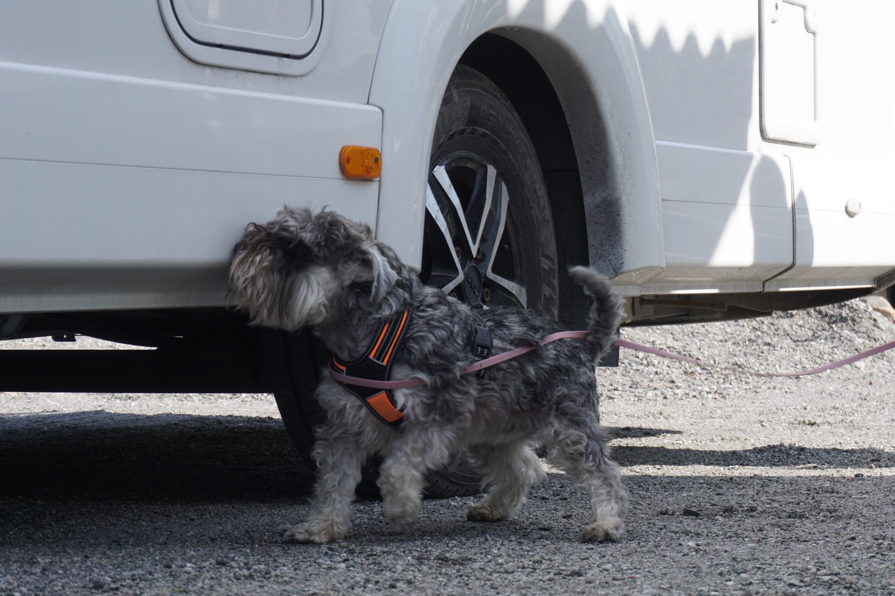
Uncategorized